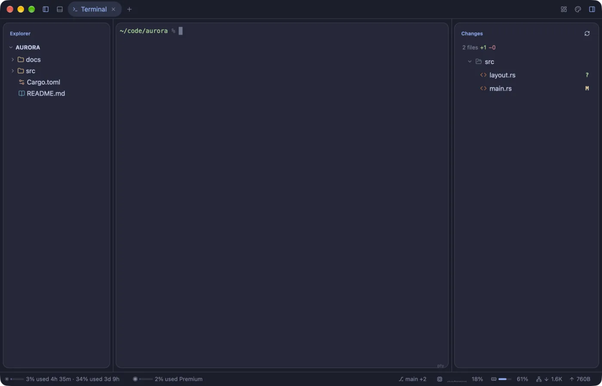
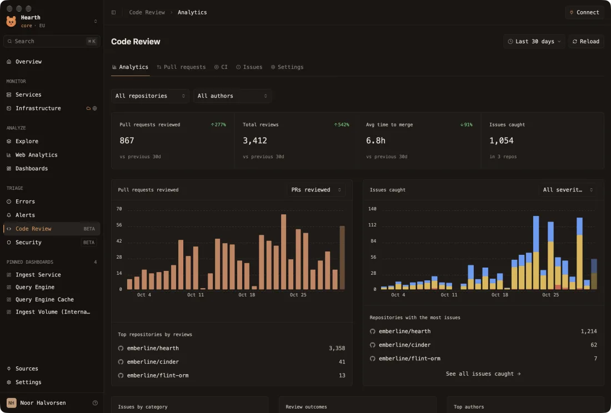

███╗ ███╗ ██████╗ ██████╗ ███╗ ██╗███████╗██████╗ █████╗ ███╗ ███╗███████╗ ████╗ ████║██╔═══██╗██╔═══██╗████╗ ██║██╔════╝██╔══██╗██╔══██╗████╗ ████║██╔════╝ ██╔████╔██║██║ ██║██║ ██║██╔██╗ ██║█████╗ ██████╔╝███████║██╔████╔██║█████╗ ██║╚██╔╝██║██║ ██║██║ ██║██║╚██╗██║██╔══╝ ██╔══██╗██╔══██║██║╚██╔╝██║██╔══╝ ██║ ╚═╝ ██║╚██████╔╝╚██████╔╝██║ ╚████║██║ ██║ ██║██║ ██║██║ ╚═╝ ██║███████╗ ╚═╝ ╚═╝ ╚═════╝ ╚═════╝ ╚═╝ ╚═══╝╚═╝ ╚═╝ ╚═╝╚═╝ ╚═╝╚═╝ ╚═╝╚══════╝
native desktop apps. luau on top, rust underneath.
// every panel, split, toolbar and status bar is a .luau file that reloads as you save. gpui draws it. the sandbox keeps it honest.
zsh — ~/code●●●
❯ git clone https://github.com/moonframehq/moonframe my-app ❯ cd my-app && mise install rust 1.9x ✓ zig 0.15 ✓ just ✓ ❯ just run loaded 11 mods · 10 providers · style.luau · 0 warnings ▸ window open on app/ ❯
what's in the box
- live reloadsave → redraw in place. state kept. broken mods keep their last good view.
- style.luaucolors, radii, shadows, fonts, hover, transitions.
- ui.terminallogin shell on alacritty_terminal or libghostty-vt.
- providerswasm components or processes → json → app.<name>.
- inspect element⌥⌘I. click a thing, get file:line, hand it to an agent.
- sandboxno fs, no net, no exec from luau. memory cap. instruction budget.
- mods from gitmoonframe mod install owner/repo@v1 — source only, read it first.
- apps as profilesmoonframe --profile some-app
screens

fig.1 — the starter, catppuccin macchiato

gantry — infra console

hearth — review bot analytics
commands
just check load everything headless, point at problems just types type-check the luau just bundle build a .app with your app inside just bundle-app NAME standalone release of a profile